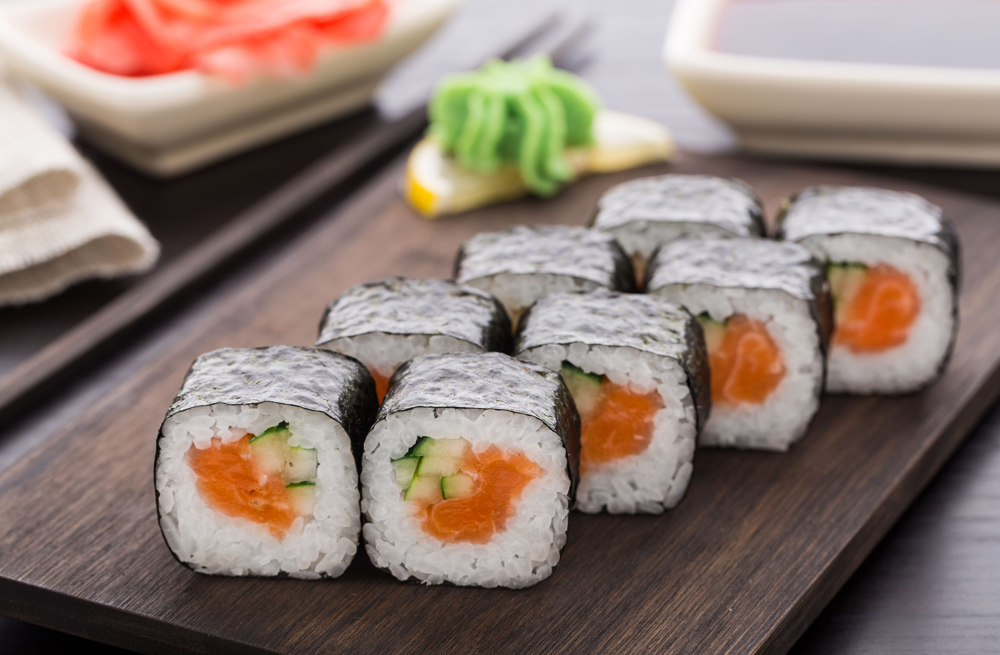

Sushi Roll

Description
A sushi roll with avocado and flaked imitation crab. This sushi roll is made with short-grain white rice and nori seaweed. The sushi
can be filled with ingredients, so substitute them where you like.
Serve sushi with soy or teriyaki sauce, and wasabi. This dish will take a total of 45 mins to complete. A tip for those without bamboo sushi mat,
you can use a clean dish towel as a substitute.
Ingredients
- 2/3 cup uncooked short-grain white rice
- 3 tablespoons rice vinegar
- 3 tablespoons white sugar
- 1.5 teaspoons salt
- 4 sheets nori seaweed sheets
- 1/2 cucumber, peeled, cut into small pieces
- 2 tablespoons pickled ginger
- 1 avocado
- 1/2 pound imitation crabmeat, flaked
Steps
- In a medium saucepan, bring 1.3 cups of water to a boil. Add rice, and stir. Reduce heat, cover, and simmer for 20 minutes.
In a small bowl, mix the rice vinegar, sugar, and salt. Blend the mixture into the rice.
- Preheat the oven to 300 degrees F (150 degrees C). On a medium baking sheet, heat nori in the preheated oven 1 to 2 minutes, until warm.
- Center one sheet nori on a bamboo sushi mat. Wet your hands. Using your hands, spread a thin layer ofrice on the sheet of nori,
and press into a thin layer. Arrange 1/4 of the cucumber, ginger, avocado, and imitation crabmeat in a line down the center of the rice.
Lift the end of the mat, and gently roll it over the ingredients, presssing gently. Roll it forward to make a complete roll.
Repeat with remaining ingredients.
- Cut each roll into 4 to 6 slices using a wet, sharp knife.